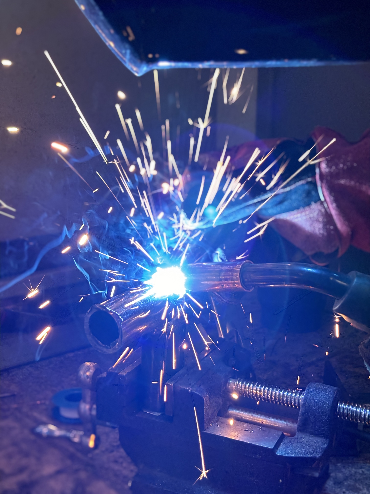
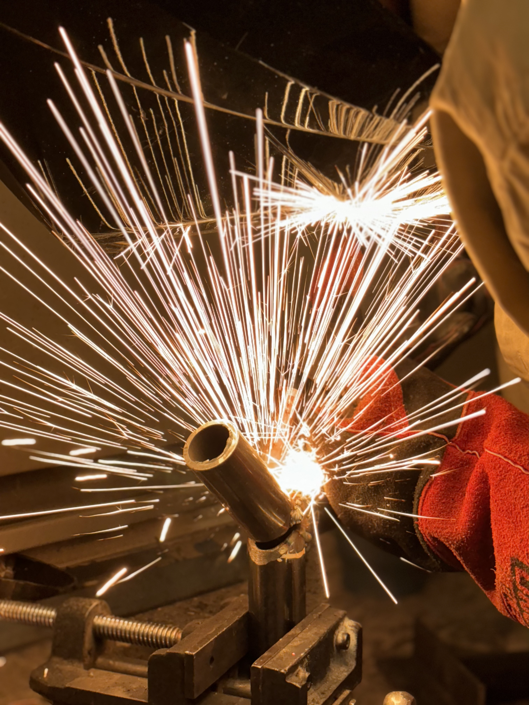
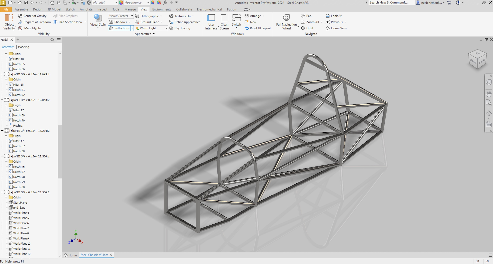
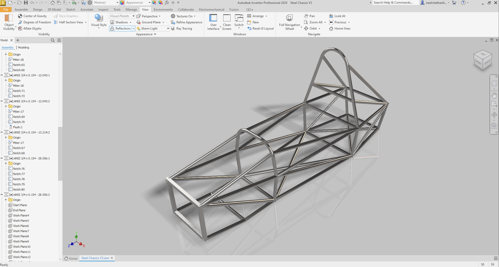
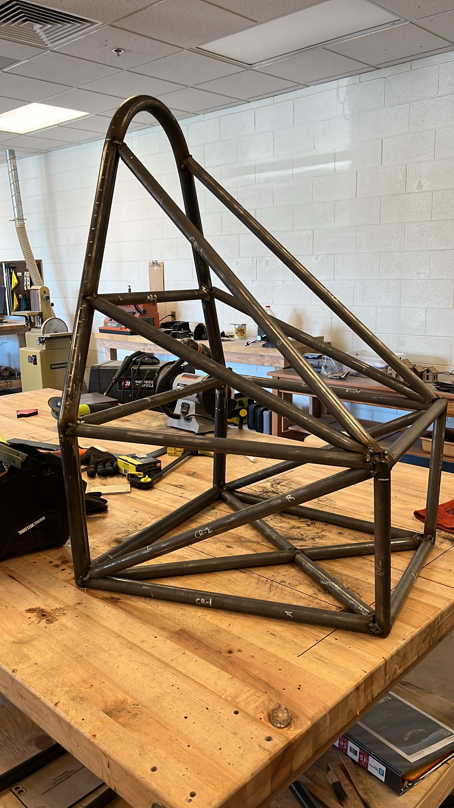
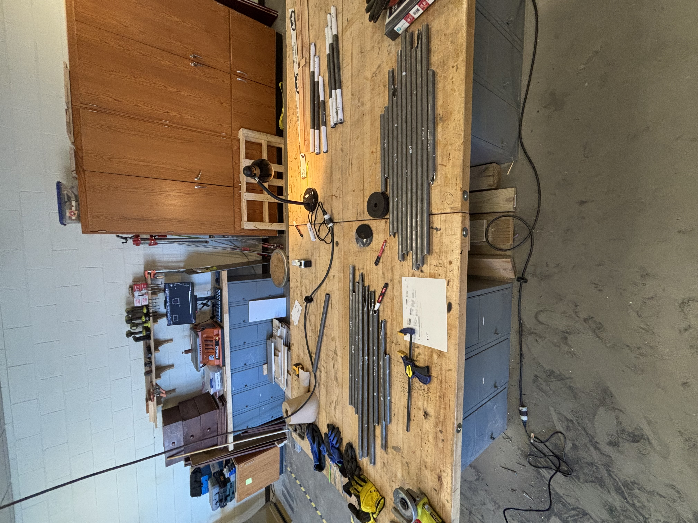

Structures · Formula SAE · Stage 3
Steel Chassis
Final Build


Overview
The steel build was the culmination of the entire chassis program. With geometry validated through two PVC prototypes and every member labeled and cross-referenced to the cut list, fabrication could proceed with confidence. Steel tube stock was cut, jigged, and MIG welded into the final FSAE spaceframe — a structurally complete chassis built to competition specifications.
Objectives
- Fabricate a competition-ready steel spaceframe meeting all FSAE structural and dimensional requirements, including minimum tube sizing and mandated triangulation zones.
- Maintain geometric accuracy throughout welding by controlling heat input and distortion across the frame assembly.
- Deliver a fully welded, structurally complete chassis from independently sourced materials.
My Contributions
- Developed the full bill of materials from the CAD model and independently sourced all steel tube stock and hardware.
- Cut all steel members to length from the cut list derived from the V2 mockup.
- Set up fixturing and jigging to hold frame geometry during welding.
- MIG welded all joints, managing weld sequence and heat input to control distortion across the frame.
Methods / Approach
Steel tube stock was cut to the lengths from the V2-validated cut list. Members were fit up in a jig that replicated the frame geometry, with clamps and tack welds used to hold position before full bead runs. Weld sequence was planned to distribute heat symmetrically — alternating sides and working from the center outward — to minimize thermal distortion pulling the frame out of square.
Key structural zones — the main roll hoop, front bulkhead, and side impact structure — were prioritized for dimensional checks against the CAD model at each stage. The front bulkhead was fabricated first as a sub-assembly, then integrated into the main frame, which simplified jigging and improved accuracy.
Results





- Completed Steel Chassis V3 — a fully welded, structurally assembled FSAE spaceframe.
- All FSAE mandated structural zones fabricated and dimensionally verified against the CAD model.
- Complete bill of materials fulfilled through independent procurement.
Challenges and How I Solved Them
Heat distortion during welding. Thin-wall steel tube distorts under welding heat, pulling joints out of the jig geometry if not managed carefully. I controlled this by tacking all joints before running full beads, planning a symmetric weld sequence, and checking frame geometry at each stage against the CAD model.
Compound-angle joints. Several members met at compound angles that required careful cope cuts to achieve full joint contact. I addressed these by referencing the CAD model for exact angles and test-fitting each member dry before welding to confirm contact geometry.
What I Learned
- The two PVC mockup stages paid off directly — fabrication was faster and more accurate because every geometry decision had already been made and verified before the first steel cut.
- Weld sequence planning is as important as weld technique — poor sequencing causes distortion that technique alone cannot fix after the fact.
- Closing the loop from design file to physical artifact develops intuition about how structures actually behave that no simulation alone can provide — stress concentrations at joints, fit-up tolerances, and fabrication-induced geometry deviation all become concrete rather than abstract.
Tools and Technologies
- Autodesk Inventor — 3D parametric CAD and cut list generation
- Autodesk AutoCAD — 2D layout and drawing
- MIG welding
- Steel tube cutting, coping, and fitting
- Fixturing and jigging for weld geometry control
- Bill of materials development and independent procurement